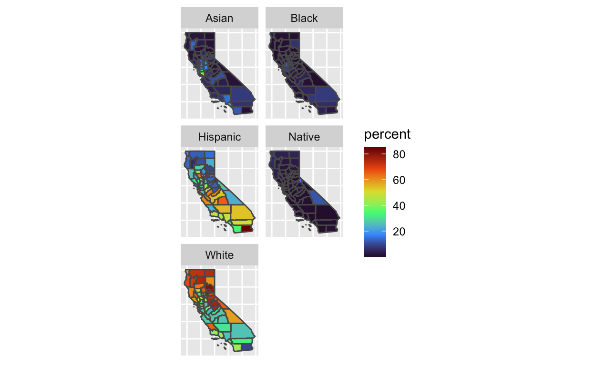
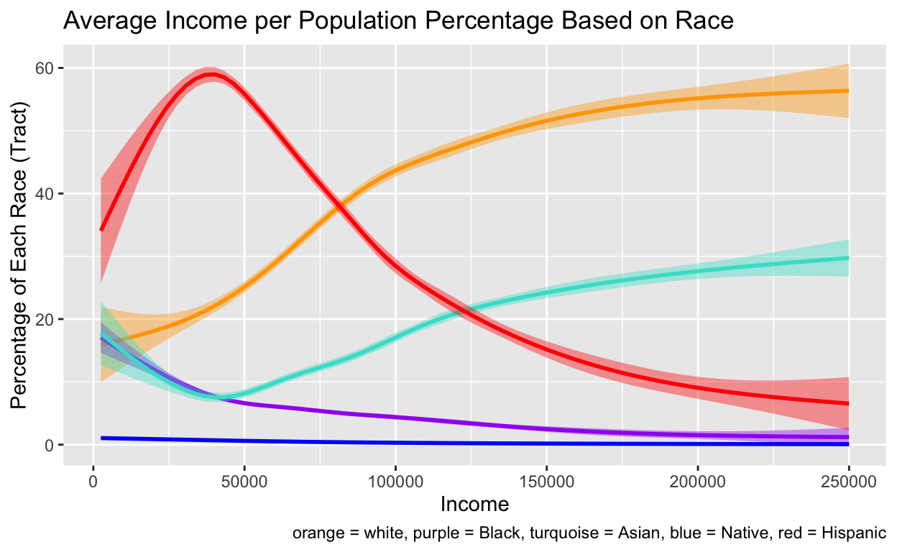

Introduction
Despite its diverse population, California continues to be a center for significant social and economic inequality. This study aims to closely examine the relationship between race and income within California. How is income level generally related to race? And, what are some factors that may be impacting these income disparities? Thus, in addition to observing how income generally correlates with race, I will simultaneously track how income is correlated with college education and unemployment.
I contend that there were will be strong correlations made between income and racial identity in California, much like the rest of the United States. Black, Native American, and Hispanic/Latino communities will likely be in the lower ranks of income level. I believe that this is largely due to historic discrimination of these communities, resulting in institutional biases and racism barring them from accessing the same resources available to their Asian and white counterparts. This is interesting because it gives concrete evidence and examples as to how the overall lack of access to resources has a strong link with the income inequality that we see in our nation.
Data
In this cross-sectional study, I used two sources:
The US Census Bureau’s American Community Survey (ACS) of 2020 to attain data on income, education, and unemployment
The US Census Bureau’s Decennial Survey of 2020 to attain data on racial identity
Both sources were merged together into the same data set.
I used four overall variables: racial proportion, income, education, and unemployment. The key independent variable is the racial proportion of each tract. The racial proportion variable is composed of five predictor variables representing the tract population proportion of five racial communities: Black, white, Hispanic, Asian, and Native American. It is essential to note that the terms Hispanic and Latino are ethnicities, but will be referred to as races in the context of this study due to their racialized status within the United States. The state that we will be specifically observing is California. Using these variables, we are able to measure the dependent variable: income.
Two additional predictor variables we will be measuring are unemployment (percentage of unemployed Californians in a census tract) and education (percentage of Californians with a Bachelor’s Degree in a census tract). These will also be measured along with the dependent variable of income.

Above are two visuals of the primary dependent variable: income. The two maps illustrate the distribution of incomes throughout the state of California. While the study observes income distribution based on census tracts, one map shows distribution across counties, which serves as an easier map to interpret. These models reveal how wealth tends to be concentrated in coastal regions, more specifically the San Francisco Bay Area.

The third map shows California’s racial makeup throughout California counties (for simplicity’s sake). The map shows the average racial makeup of each California county, with Hispanic and white Californians being the most populous demographics. According to the maps, Hispanic Californians span across California, concentrating near the coast, Southern California, and the Central Valley. White Californians tend to concentrate in more Eastern and Northern areas of the state. Asian Americans tend to be found near Los Angeles and the San Francisco Bay Area. Finally, the Black and Native Americans are relatively small throughout the state.
Results
The following section presents a regression table and plot of the data.
Multiple Regression Table
| Tract Income 1 | Tract Income 2 | Tract Income 3 | Tract Income 4 | Tract Income 5 | |
|---|---|---|---|---|---|
| Percentage Bachelor’s | 2472.324*** | 2411.792*** | 1979.034*** | 2347.849*** | 2537.698*** |
| (32.887) | (39.049) | (45.951) | (34.082) | (32.679) | |
| Percentage Unemployed | −3141.025*** | −3062.894*** | −2528.774*** | −2981.572*** | −3223.207*** |
| (43.543) | (51.107) | (59.012) | (44.991) | (43.328) | |
| Percentage Black | −599.507*** | ||||
| (44.194) | |||||
| Percentage White | 111.491*** | ||||
| (16.438) | |||||
| Percentage Hispanic | −322.279*** | ||||
| (18.315) | |||||
| Percentage Asian | 396.996*** | ||||
| (21.996) | |||||
| Percentage Native | −1466.654*** | ||||
| (226.839) | |||||
| Num.Obs. | 9002 | 9002 | 9002 | 9002 | 9002 |
| R2 | 0.419 | 0.410 | 0.427 | 0.428 | 0.410 |
| R2 Adj. | 0.419 | 0.410 | 0.427 | 0.428 | 0.410 |
| AIC | 211991.3 | 212127.7 | 211869.0 | 211853.5 | 212131.9 |
| BIC | 212026.9 | 212163.2 | 211904.6 | 211889.0 | 212167.4 |
| Log.Lik. | −105990.671 | −106058.841 | −105929.515 | −105921.731 | −106060.930 |
| RMSE | 31419.57 | 31658.41 | 31206.84 | 31179.87 | 31665.75 |
| + p < 0.1, * p < 0.05, ** p < 0.01, *** p < 0.001 |
This table illustrates the regressions of multiple variables in relation to income. All of the regression coefficients show strong correlations and significance, as indicated by the three asterisks adjacent to every value. These three asterisks indicate a p-value less than 0.001, implying very strong significance. Hence, it can be stated that all coefficients in the table have high statistical significance.
The Black regression model indicates that, with explanatory variables of Bachelor’s Degrees and unemployment held constant, for every single percentage increase in the Black population of a California tract, the income of the California tract is expected to decrease by about $599.507. The Hispanic regression model indicates that, with explanatory variables of Bachelor’s Degrees and unemployment held constant, for every single percentage increase in the Hispanic population of a California tract, the income of the California tract should decrease by about $322.279. The final demographic to, according to the table, generally generate an average loss in income with an increase in its tract population in Native Americans. With explanatory variables of Bachelor’s Degrees and unemployment held constant, for every single percentage increase in the Native population of a California tract, the income of a California tract is expected to decrease by about $1466.654.
In contrast, the general demographics of white and Asian Californians show increases in tract income with increases in their share of the tract’s population. The white regression model indicates that, with explanatory variables of Bachelor’s Degrees and unemployment held constant, for every single percentage increase in the white population of a California tract, the income of the California tract should increase by about $111.491. The Asian regression model indicates that, with explanatory variables of Bachelor’s Degrees and unemployment held constant, for every single percentage increase in the Asian population of a California tract, the income of the California tract should increase by about $396.996.
Finally, with each racial demographic and unemployment held constant, the regression table indicates that a singular increase in the percentage with a Bachelor’s Degree will prompt an increase in income that ranges between $1979.034 and $2537.698. This means that a tract with more owners of a Bachelor’s Degree is likely to be more affluent. Observing the predictor variable of unemployment, with each racial demographic and Bachelor’s Degree possession held constant, the regression table shows that a singular increase in the percentage of the tract’s unemployed population result in a decrease in income that ranges between $2528.774 and $3223.207. This data implies that a greater presence of unemployed individuals in a census tract is indicative of a lower tract income level.
It is important to note that the regression table is staggered in structure. This is in order to reduce interactions between the racial demographic questions. Since these racial groups add to 100%, changing the value of one explanatory variable would necessarily change the outcomes of others. Therefore, in order to avoid this phenomenon, a staggered approach was applied that, when analyzing a specific racial demographic, only holds the Percentage Bachelor’s and Percentage Unemployed constant.
Plot Summary

The bivariate regression model above demonstrates the general relationship between racial composition of a tract and the tract’s income. This model generates different trends from the previous regression as it holds it reveals a multivariate relationship without incorporation of the Bachelor’s Degree and Unemployment variables.
The model shows that Native Californians and white Californians tend to decrease the average incomes of their tracts. On the other hand, Asian, Black, and Hispanic communities all show general average income increases with the increase in their respective populations. All lines have relatively small standard errors, except in the case of Native Americans. The high variation indicated by the Native American demographic is likely due to their survey population being smaller than that of the other racial demographics.
Causality and Confounders
This study was purely descriptive, demonstrating the general relationships and correlations between race and income. Since there is no treatment or control, there is no way of controlling for potential confounders. Human beings are not born with a tacit ability to earn higher incomes than others because of race.
Factors that may impact access to wealth are largely environmental, including some of the other observed variables, such as education and employment. Nonetheless, trends within these confounding fields are also affected by institutional issues of racial discrimination, which affect certain communities differently. Drawing from the regression, communities with greater access to a college education and employment are more likely to have higher incomes. Effects of institutional racism can be far reaching into distinct neighborhoods and communities, under-funding them and affecting their access to resources necessary for financial success.
Conclusion
The analysis has shown that race and income in California are strongly correlated. When there is an increase in the population of Black, Hispanic, or Indigenous people in a Census tract, the average income level of the tract is expected to drop. Meanwhile, an increase in Asian and white Californians increase the average tract income. Race and income are inextricably tied, and they reflect a much broader American issue of racial discrimination.
While observing these results, I understood the importance of measuring other predictor variables, such as education level and unemployment levels in California tracts. The positive correlation between income and attainment of a Bachelor’s degree indicates how education level is a potential factor that may largely influence the dichotomies in income that the various racial groups face. With unemployment levels holding a negative relationship with income, higher levels of unemployment in certain communities may effect significant income losses.
Examining these separate variables is essential because there is no inherent reason for which certain demographics trend towards lower affluence in a state like California. In addition to being racial/ethnic minorities, there are also institutional obstacles that many families of color face. Asian American families hold a peculiar spot within this demographic, for they do face institutional racism, but in a different manner, with many white Americans using Asian Americans as “model minorities.”
Limitations
One specific concern with this study is how well each population is represented. As previously noted, the Native American population in California is likely to be significantly smaller than all other racial demographics. This could be both due to smaller numbers in their population, as well as lack of participation in surveys by those with tribal affiliations and live in Indigenous Nations. Furthermore, a level of distrust between the US government and Indigenous communities likely disincentives Native Americans from partaking in Census Decennial and ACS surveys.
Similarly, Hispanic Californians and Asian Californians, as the two largest migrant populations in California, may face complications in being incorporated in the Census, due to citizenship concerns. Undocumented immigrants, which compose large portions of these communities, are likely to be less swilling to engage with surveys documenting their information. Ultimately, this omission of undocumented immigrants removes a significant portion of the Californian economy from important studies that use Census data.
Next Steps
Moving forward, future researchers should expand the scope of this study. It would be interesting to see how these trends vary in different regions of the United States. By observing variations across states, more precise conclusions can be drawn about the relationship between race and income. Likewise, observing how racial demographics shift in other states, as well as their access to resources, can help determine the extent to which certain confounding variables may influence our research.
Moreover, there is potential for further study of the variables of unemployment and college education as outcome variables with the racial categories as predictor variables. By finding links between race and unemployment, as well as education, stronger claims can be made about the general disparities in resource allocation across different communities.
The expansion of this research will not only display more precisely the relationships between race and resource allocation, but also the social inequities that permeate American society.